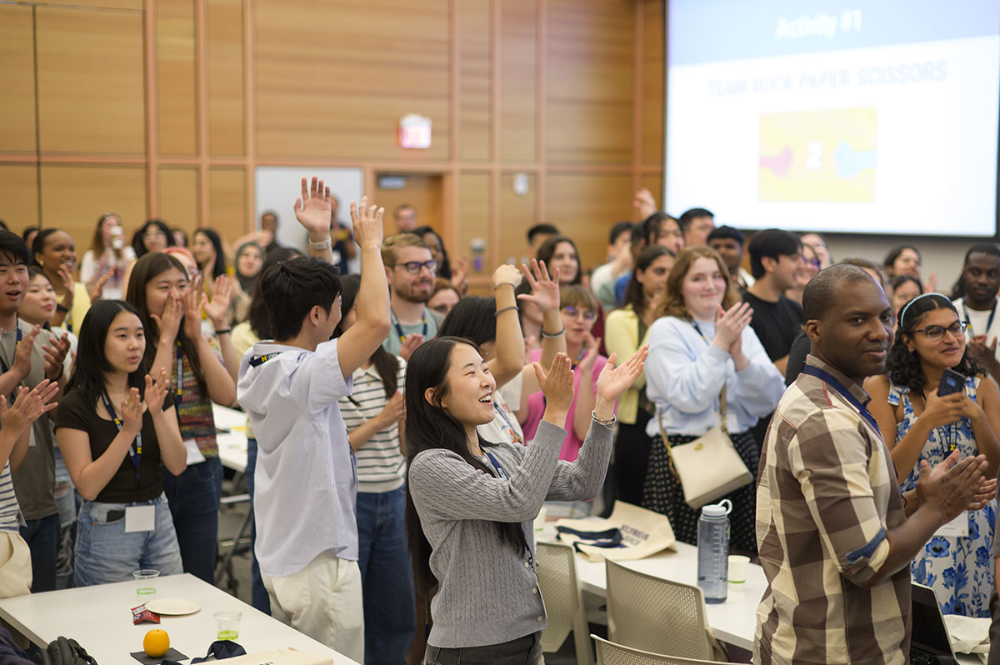
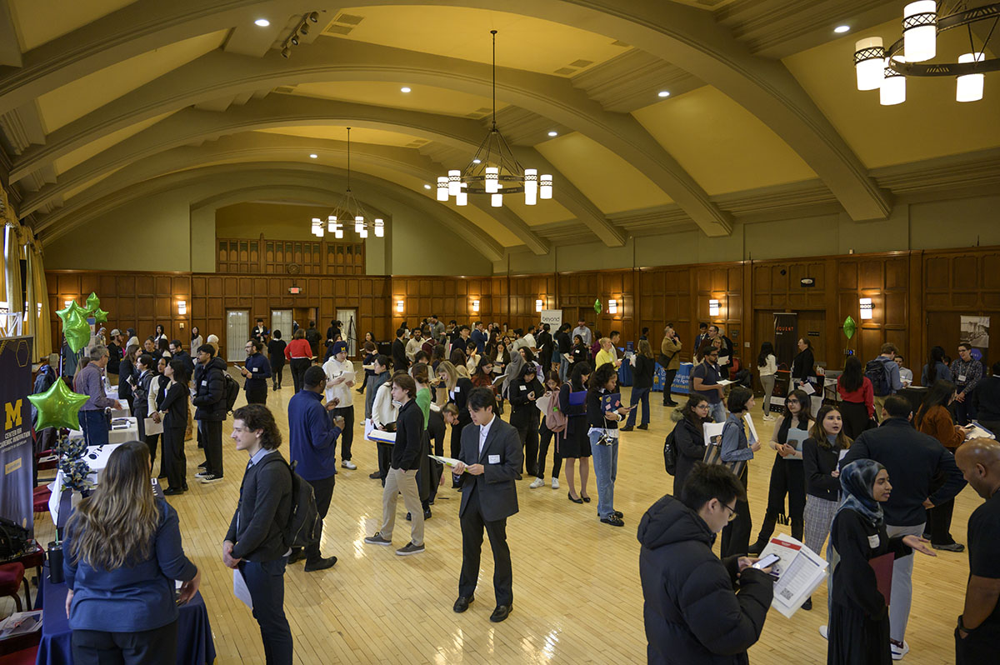
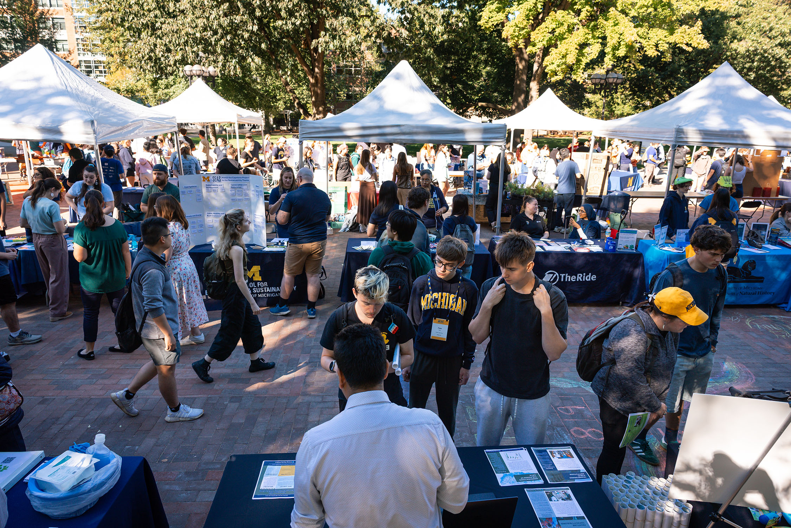

Why Connect with UMSI Alumni?
UMSI alumni are valuable sources of real-world wisdom, networking leads, inspiration, and career advice. They have experience navigating career paths and can share insights about employer cultures, building skills, and discovering opportunities that match your goals.

- Informational Interviews: Set up relaxed conversations to ask alumni about their jobs, workplaces, and career journeys.
- Career Paths: Explore how alumni navigated transitions from student to professional or between industries.
- Networking Events: Meet alumni at career fairs, panels, and virtual meetups hosted by UMSI and the CDO.
Connect with the CDO


The CDO supports every UMSI student in planning and searching for the best career opportunities. Reach out for personalized help with resumes, interviews, job exploration, or building your professional network.
- Career Coaching Appointments: Meet one-on-one with a career advisor to review your materials or get advice.
- Events and Workshops: Attend regular events focused on networking, portfolio building, and job search strategy.
- Email Support: Contact the CDO at umsi-career@umich.edu for questions or guidance.
- Find Us: See UMSI Campus Locations for directions and office hours.
Quick Tips
- Prepare thoughtful questions before reaching out.
- Respect alumni's time by being clear, concise, and courteous.
- Follow up with a thank-you note or email after your meeting.
- Ask for referrals to other professionals if appropriate.